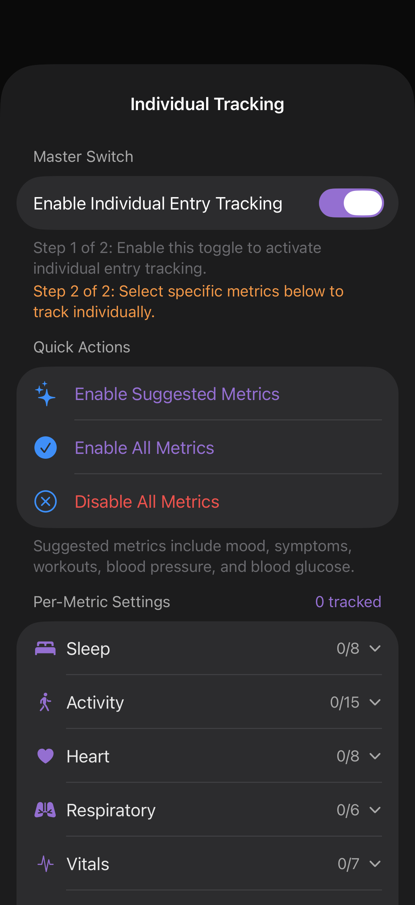

Individual Entry Tracking
Optionally write one file per timestamped entry — every workout, every blood-pressure reading, every mood log gets its own Markdown file with the timestamp baked into the filename.

When to use it
Daily exports give you one file per day with summaries. Individual tracking is for the case where you want to cite a single event — link to a specific workout from a journal note, or backlink a mood entry into a weekly review.
This is on top of the daily export, not instead. With both on, you get both kinds of files.
Two-step setup
The settings UI is intentionally a two-step funnel:
- Master switch. Turn the feature on globally.
- Per-metric selection. Choose which metrics get individual files. Most people don't want a file per heart-rate reading (10,000 / day) — but they do want one per workout (~1 / day).
Quick actions
Folder structure
Filename template
Default: {date}_{time}_{metric}. Available placeholders: {date}, {time}, {metric}, {category}. Example output:
{vault}/entries/workouts/2026-04-28_07-32_workout.md
{vault}/entries/symptoms/2026-04-28_14-12_headache.md
{vault}/entries/blood-pressure/2026-04-28_19-45_blood-pressure.mdOnly categories where you've enabled at least one metric in Health Metrics show up here. Enable a metric there first, then come back to choose whether it gets per-entry tracking.